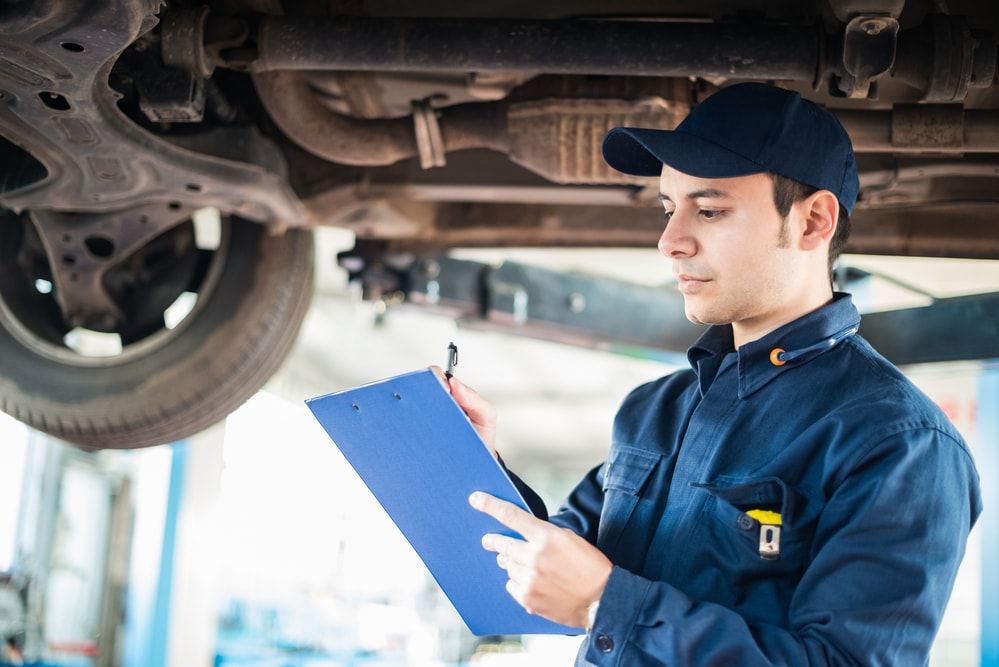

Qual a importancia da manutenção preventiva?
Se você gosta da sensação de passar meses sem frequentar oficinas e só procurar o mecânico quando o carro apresenta um problema, saiba que está sendo vítima de uma falsa impressão de economia. Cada visita dessas à oficina, depois de perceber falhas no veículo, está saindo bem mais cara do que seria, caso você realizasse as revisões em dia.
A manutenção preventiva serve exatamente para prever problemas no carro e resolvê-los antes que eles se tornem um risco para sua segurança e seu bolso. Vamos ver o que ela pode fazer por você?
Evite surpresas desagradáveis
Muitas questões do seu carro podem ser acompanhadas e resolvidas antes mesmo de virarem problemas. Todas as peças têm uma vida útil específica e apresentam sintomas quando estão sofrendo desgaste. Assim, ao realizar a manutenção preventiva e trocar essas peças no tempo correto, você evita o risco de algum componente parar de vez e ficar na mão por causa de uma pane mecânica.
Maior segurança
Um veículo mal cuidado é um perigo para o motorista e o trânsito em geral. Lembre-se de que tudo no seu carro é programado para funcionar em conjunto. Quando um componente, por mais simples que pareça, passa da vida útil e começa a sofrer um desgaste exagerado, pode causar grandes danos à sua segurança.
Imagine, por exemplo, que você está rodando com seu carro e, de repente, enfrenta problemas no câmbio e não consegue mais mudar de marcha. Pior, em dado momento, tenta frear o veículo e percebe que ele não está com a mesma eficiência de antes. Situações desse tipo configuram grandes riscos no trânsito. Por isso, acompanhar as condições das peças é fundamental para dirigir de forma segura!
Reduz os custos
Sim, realizar manutenções preventivas permite que você economize dinheiro. Isso acontece por dois motivos principais. O primeiro é que um carro desregulado, geralmente, consome mais combustível e desgasta mais rápido as peças. O segundo é que manutenções corretivas sempre serão mais caras do que as preventivas.
Na prática, acontece o seguinte: se na revisão você precisa gastar R$ 100,00 trocando uma pequena peça que chegou ao fim da vida útil significa que, se não trocada, ela pode prejudicar outras peças e até um sistema todo, causando gastos muitos maiores.
Podemos usar o exemplo dos pneus. Se você não mantiver o alinhamento e balanceamento em dia, eles vão sofrer desgaste irregular e precisarão ser trocados antes da data. O valor desses dois serviços certamente é muito mais barato que um jogo de pneus novos, não é? Então, se você deseja diminuir seus gastos, a melhor dica é realizar todas as revisões programadas.